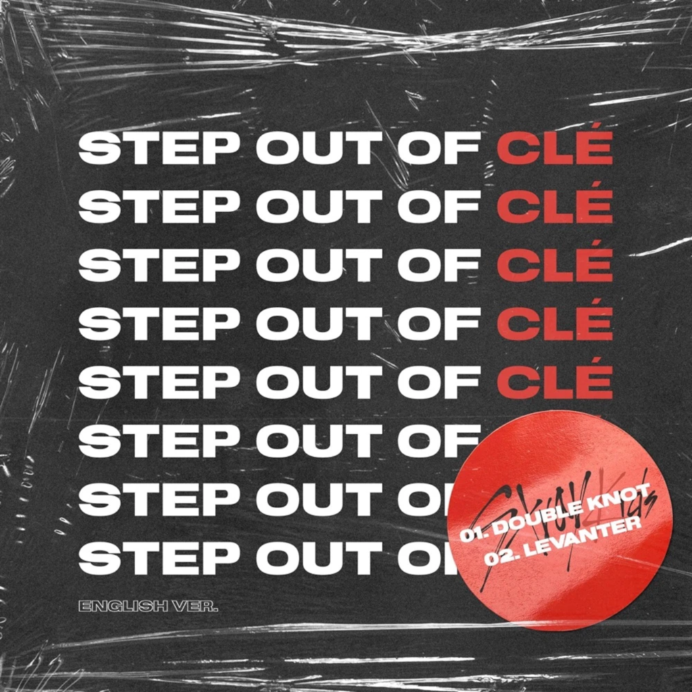
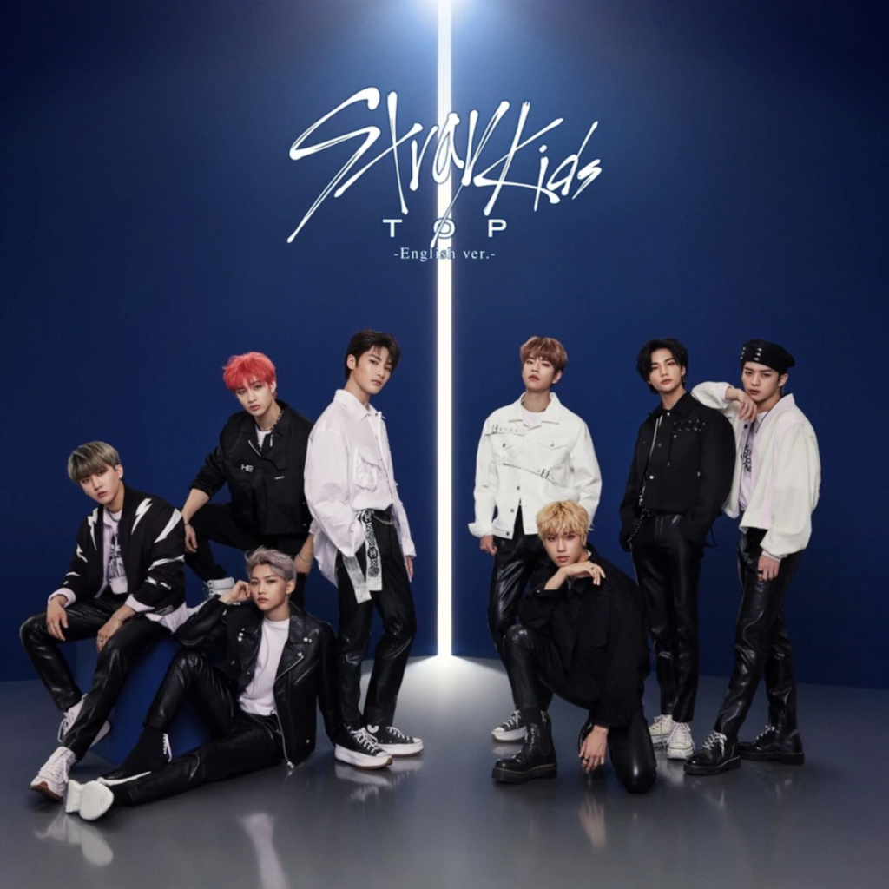
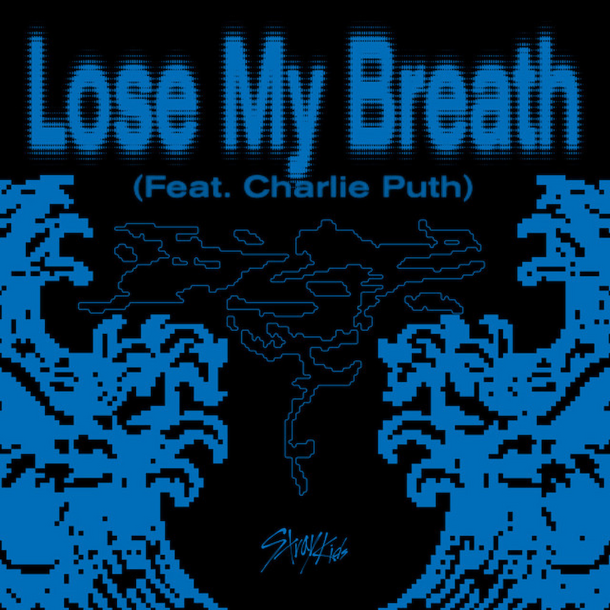
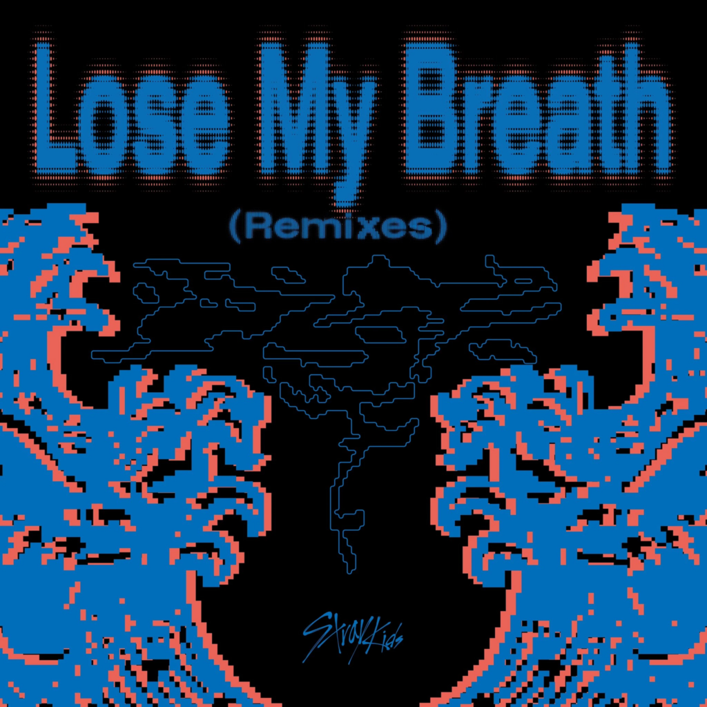

Step Out of Clé
24 gennaio 2020
- Double Knot (English Ver.) - 3:09
- Levanter (English Ver.) - 3:15

TOP (English Ver.)
20 maggio 2020
- TOP (English Ver.) - 3:05
- SLUMP (English Ver.) - 2:14

Lose My Breath (feat. Charlie Puth)
10 maggio 2024
- Lose My Breath (feat. Charlie Puth) - 2:46
- Lose My Breath (feat. Charlie Puth) (Instrumental) - 2:46

Lose My Breath (Remixes)
13 maggio 2024
- Lose My Breath (Stray Kids Ver.) - 2:46
- Lose My Breath (feat. Charlie Puth) (Soft Garage Ver.) - 3:17